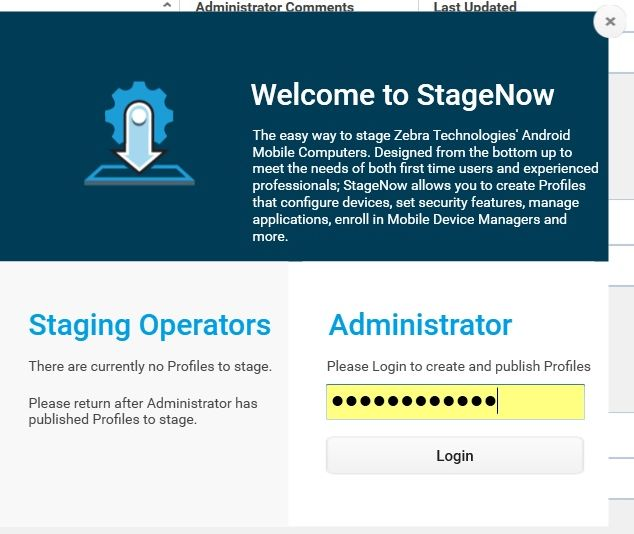
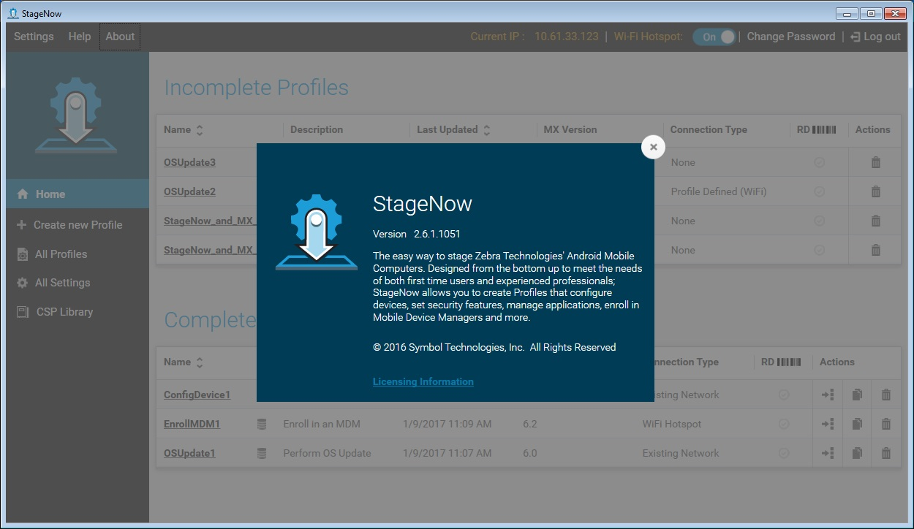

はじめに
このセクションでは、StageNow の Android ステージング ソリューションについて説明します。ステージングとその目的、およびユーザーについても説明します。
StageNow のインストールについては、「インストール」のセクションを参照してください。
ステージング
ステージングとは、デバイスの管理者またはオペレータがデバイスを設定したり、ファームウェアやソフトウェアをデバイスに導入して本番環境で使用するための準備を行ったりするプロセスです。ステージングの作業では、システムとデバイスの設定、導入、および管理を行います。
管理者は、企業内のすべてのデバイス、特定の事業所や現場内のデバイス、または現場や各ユーザーについてステージングを行うことができます。
StageNow ステージング ソリューション
StageNow は、Android デバイス向けの Zebra のステージング ソリューションです。シンプルなバーコード スキャンまたはタグ読み取りにより、プロファイルの作成とデバイスの導入を簡単に行うことができます。
StageNow Staging Solution には、次のコンポーネントが含まれています。
StageNow Workstation ツールは、ステージング ワークステーション (ホスト コンピュータ) 内で操作するユーザー インタフェースです。ステージングの管理者はこのツールを使用して、デバイスのコンポーネントを設定するステージング プロファイルの作成のほか、さまざまなステージング アクションを行います。Workstation ツールには、ツールに入力された内容 (設定やステージング プロファイルなど) を保管および保存するデータベースとサーバーが含まれています。
注: このツールに内蔵されているステージング サーバーは、導入セクションのステージング コンテンツ、リモート サーバーからのダウンロード対象として選択されたファイル、および RD ステージングファイルをデバイスがダウンロードする際のダウンロード先となる FTP サーバーです。複数のアプリケーションで同時にポート #21 (通常は FTP サーバーで使用) を使用できないため、管理者は Workstation ツールが入っている PC で、他の FTP サーバー (または別のポートを使用しているサーバー) がバックグラウンドで動作していないことを確認する必要があります。ステージング (FTP) サーバーは、ツールが実行されているときのみ動作し、アプリケーションが終了すると停止します。したがって、前述のようにプロファイルを使用してデバイスをステージングする場合は、StageNow が動作している必要があります。
StageNow Client はデバイスに常駐し、ステージング オペレータがステージングを開始できるように、ユーザー インタフェースを提供します。オペレータは何らかのステージング方法 (バーコードの印刷とスキャン、NFC タグの読み取りなど) を使用して、ステージングのデータをデバイスに送信します。
サポートされているデバイス
このバージョンの StageNow では、Android 4.x KitKat 以降および MX 4.3 以降が動作するすべての Zebra デバイスをサポートしています。
詳細については、「StageNow について」ページを参照してください。
注: あるデバイスでサポートされる MX 機能は、デバイスにインストールされている Android、MX、および OSX のバージョンによって異なります。特定のデバイスで使用可能な機能を確認するには、「MX の機能一覧」を参照し、そこに記載されている手順に従います。
古い Android バージョン
StageNow クライアントがインストールされていて、Android バージョン 5.x Lollipop 以前のバージョンが動作しているデバイスは、StageNow のすべての機能をサポートしています。Jelly Bean および一部の KitKat バージョンが入ったデバイスには、Rapid Deployment (RD) クライアントが付属しています。ステージングの際に、これらのデバイスは StageNow で生成された RD バー コードをスキャンできます。スキャンすると RD クライアントがネットワークに接続し、KitKat デバイスでは MX 5.0、Jelly Bean デバイスでは MX 4.4 以下、および StageNow クライアントをデバイスに自動インストールします。すると、StageNow Client を使用して、StageNow プロファイルのバーコードをスキャンして設定できるようになります。このプロセスの詳細については、「Rapid Deployment (RD) クライアント」を参照してください。
注:
Jelly Bean デバイスに StageNow クライアントと MX をインストールするには、MX 4.4 以前のバージョンのウィザードを使用してプロファイルを作成します。
StageNow クライアントが入っていないデバイスが RD クライアントを使用してステージングされると、デバイスの OS の制限により、一部の StageNow 機能しかサポートされない場合があります。ある機能を特定のデバイスがサポートしているかどうかを確認するには、設定タイプごとの「機能の互換性」セクションを参照してください。
StageNow のユーザー
StageNow は通常、次の 2 つの使用シナリオに分類されます。
- ステージング管理者が StageNow Workstation ツールのメインのユーザーであり、システムおよびクライアント デバイスの構成、導入、および管理を担当する。管理者が、実行するステージングを識別し、ステージング コンテンツ (アプリケーションなど) を収集し、コンテンツの配信に使用するステージング方法を決定し、その素材を Workstation ツールにアップロードするプロファイルを作成する。
- ステージングするデバイスをステージング オペレータが識別し、Workstation ツールを使用して、管理者が公開したプロファイルを表示および選択する。オペレータはその後、デバイスのステージングに使用するステージング素材 (バーコードなど) を出力し、デバイス上の StageNow クライアントを使用してステージングを実行する。これで、オペレータからデバイスをエンド ユーザーに提供できる。
ステージングの方法
StageNow で使用できるステージング方法を次に示します。詳細については、「デバイスのステージング」を参照してください。
バーコード - オペレータが、プロファイルの情報が入ったバーコードを紙またはワークステーションの画面に生成し、デバイスのスキャナまたはイメージャ (スキャナやイメージャがない場合はカメラ) でそのバーコードをスキャンして、そのデバイスを設定します。
NFC タグ - オペレータが、プロファイルのデータをエクスポートして NFC タグにプログラミングし、デバイスから一定の距離までタグを近づけてデバイスの NFC タグ リーダーでタグを読み取って、デバイスにプロファイルを導入します。
音声に関する注: StageNow 4.1 以降、オーディオ ステージングはサポートされなくなりました。
ホーム画面
ツールを開くには、[スタート] メニューから [StageNow] アイコンを選択します。
公開プロファイルが利用可能な場合は、ステージング オペレータのホーム画面が表示されます。

オペレータのホーム画面に、使用可能な最新のプロファイルが一覧表示されます。画面の上部に、現在使用されている IP アドレスが表示されます (あれば)。ステージング サーバーに接続する必要がある場合に便利です。
このウィンドウのメイン セクションには、次のフィールドがあります。
お気に入り - プロファイルを [お気に入りのプロファイル] リストに追加する場合に選択します。
名前 - 管理者が指定したプロファイルの名前。クライアント デバイスをステージング サーバーに接続する必要があるプロファイルには、プロファイル名の後ろにサーバーのアイコンが表示されます。
管理者のコメント - プロファイルに関するメモ。
最終更新日時 - 管理者が最後にプロファイルを更新した日時。
最終公開日 - プロファイルが最後に公開された日時。
MX バージョン - プロファイルの作成時に使用された MX のバージョン。
接続タイプ - StageNow がネットワークに接続する方法 (MX 6.x 以降)。
RD - プロファイルが RD 対応かどうか、すなわち RD バーコードをこのプロファイルから出力できるかどうかを示します。
ステージング オペレータ用に公開されたプロファイルがない場合は、[ようこそ] 画面が表示されます。

インストール時に設定した管理者パスワードを入力し、[ログイン] を選択して管理者ホーム画面を開きます。

管理者ホーム画面には、プロファイルが、完了した段階ごとにグループ化されて表示されます。
現在の IP アドレス
画面の上部に、現在使用されている IP アドレスが表示されます。ステージング サーバーに接続する必要がある場合に便利です。
使用可能な IP アドレスが 1 つのみの場合、StageNow ではそれが選択されます。
StageNow システムに IP アドレスがない場合は、ウィンドウの [現在の IP] セクションに [利用不可] と表示されます。これにより、StageNow バーコードまたは NFC タグの出力が制限される場合があります。
複数の IP アドレスが使用可能で、そのどれも選択されていない場合、ウィンドウの [現在の IP] セクションには [未選択] と表示されます。このセクションをクリックして、ステージングに使用する IP アドレスを選択します。

IP を選択し、[現行として設定] を選択します。この IP アドレスは、再起動後やシステムの再起動後も含めた今後の操作でも保持されます。
パスワードの変更
画面の右上隅に、管理者パスワードを変更するオプションがあります。
管理者パスワードを変更するには、[パスワードの変更] を選択します。

現在のパスワードを入力し、[新しいパスワード] フィールドと [新しいパスワードの確認] フィールドに新しいパスワードを入力します。
[変更] を選択します。パスワードが正常に変更されたことを示すウィンドウが表示されます。

[OK] を選択します。
KEEP YOUR PASSWORD SAFE!
いったんパスワードを設定すると、StageNow 機能および、そこに保存されたプロファイルその他の保管データへのアクセスのロックを解除する唯一の手段が管理者パスワードとなります。パスワードを紛失したりまたは忘れたりした場合、StageNow をアンインストールして再インストールする方法でしかパスワードをリセットできません。その結果、保管されているデータと設定がすべて失われます。
プロファイル リスト
[ホーム] ウィンドウのさまざまなプロファイル リストには、次のフィールドがあります。
名前 - 管理者が指定したプロファイルの名前。クライアント デバイスをステージング サーバーに接続する必要があるプロファイルには、プロファイル名の後ろにサーバーのアイコンが表示されます。
説明 - プロファイルの簡単な説明。
最終更新日時 - 管理者が最後にプロファイルを更新した日時。
MX バージョン - プロファイルの作成時に使用された MX のバージョン。
接続タイプ - StageNow がネットワークに接続する方法 (MX 6.X のみ)。
RD - プロファイルが RD 対応かどうか、すなわち RD バーコードをこのプロファイルから出力できるかどうかを示します。
アクション - プロファイルに対して実行する次のアクションです。
エクスポート
 - StageNow ツール内で他の管理者が使用できるようにプロファイルをエクスポートするか、MDM 用にエクスポートします。
- StageNow ツール内で他の管理者が使用できるようにプロファイルをエクスポートするか、MDM 用にエクスポートします。コピー
 - プロファイルをコピーして、類似のプロファイルを別の名前で作成します。
- プロファイルをコピーして、類似のプロファイルを別の名前で作成します。削除
 - プロファイルを削除します。
- プロファイルを削除します。
サーバー アイコン
クライアント デバイスをステージング サーバーに接続する必要があるプロファイルでは、次の図の最初のプロファイル名のように、プロファイル名の隣にサーバーのアイコンが表示されます。

次の表に、サーバーの接続が必要であることを示すサーバー アイコンが表示される状況を一覧で示します。
| プロファイルの設定 | ステージング クライアント | サーバーが必要 |
|---|---|---|
| StageNow 構成 | StageNow | |
| RD | N/A | |
| StageNow 構成 + RD 構成 | StageNow | |
| RD | X | |
| StageNow 構成 + 導入 | StageNow | X |
| RD | N/A | |
| StageNow 構成 + RD 構成 + 導入 | StageNow | X |
| RD | X |
StageNow メニュー
StageNow Workstation ツールのウィンドウの左上隅には、次の 3 つのメニュー項目があります。
設定
ツールの左上の [設定] を選択すると、5 つのオプションが表示されます。

エクスペリエンス プログラムに参加
将来のバージョンで StageNow の操作性を向上させるために使用される匿名の使用状況データを送信するには、この設定をオンにします。
レガシー モード
プロファイルを作成するときに RD オプションを含めるには、この設定をオンにします。このオプションをオフのままにすると、プロファイル作成時に RD セクションが表示されません。
[レガシー モード] のフラグはデフォルトでオフになっています。
オンの場合、すべてのプロファイルで [RD] セクションが表示されます。
オフの場合、プロファイル作成時に [RD] セクションが管理者に表示されません。
オフの場合、既存のプロファイルでは [RD] セクションが淡色表示され、レガシー モードを有効にするためのリンクが表示されます。リンクを選択して上記の [設定] 画面を開き、[レガシー モード] のフラグをオンにして [RD] セクションのコンテンツを有効にします。
オフの場合、管理者がプロファイルの作成時にこのセクションで [いいえ] を選択すると [RD] セクションは表示されません。
最初のエラーで終了
最初のエラーが発生したときにステージング プロセスを終了するには、この設定をオンにします。オフのままにすると、StageNow クライアントがプロファイルの最後の手順を処理するまで、ステージング プロセスが続行されます。
[最初のエラーで終了] フラグがオンの場合、最初のエラーでステージング プロセスが終了します。
オフの場合、StageNow クライアントがプロファイルの最後の手順を処理するまで、ステージング プロセスが続行されます。
Xpert モードでは、[最初のエラーで終了] がオンの場合、プロファイルに ConditionMgr DSD が存在する場合のみこのフラグが機能します。
起動時にソフトウェア アップデートを確認
この設定をオンにすると、StageNow の新しいバージョンが使用可能になっていることを示すメッセージがメニュー バーの下に表示されます。
ヘルプ
デフォルトのブラウザで StageNow ユーザー ガイドを起動します。
概要
StageNow のバージョンを表示し、Workstation ツールについて簡単に説明します。

StageNow の暗号化
StageNow データベースは常に暗号化され、管理者パスワードにリンクされます。
StageNow Workstation ツールの外部で使用するステージング データを暗号化することで、機密情報を保護します。
プロファイルのエクスポートの際に、機密性の高いパラメータが暗号化され、それによって機密性の高い導入情報が保護されます。
ステージング バーコードと NFC タグには構成データが含まれています。バーコードとタグがデフォルトで暗号化されて、不正なデバイスによる読み取りを防止します。暗号化によって大量の情報が追加され、追加のバーコードが必要になる場合がありますので注意してください。機密性の高いパラメータは不正アクセスを受けやすくなる可能性があるため、迅速な導入のために暗号化をオフにする際は細心の注意を払ってください。
使用事例
ステージング管理者は、StageNow Workstation ツール内で事前定義されたウィザードを使用して、設定を構成し、企業内のモバイル デバイスのソフトウェア構成やインストールを定義するプロファイルを作成します。これらのウィザードには、デバイスに情報を導入するための一般的な使用事例が示されます。
StageNow ステージング プロセスの概要
一般的なステージング プロセスは次のとおりです。各手順の詳細については、このガイドの該当するセクションを参照してください。
管理者が、企業内のモバイル デバイスに必要なソフトウェア設定やインストールを決定します。
管理者が StageNow Workstation ツールを開き、提供されたウィザードのいずれかを選択します。ウィザードには、管理者がデバイスのプロファイルを作成するために必要な設定値を定義するひとつづきの画面が用意されています。
管理者がウィザードで作業を行います。各ウィザードの一部のセクションに設定テンプレートがあります。このテンプレートで値を選択して保存すると、設定が作成されます。この設定を管理者が保存することで、後で他のプロファイルを作成するときに使用することができます。
ウィザードが完了すると、管理者がプロファイルまたは一連の設定を作成します。
管理者がプロファイルの精度を確認します。
管理者が、バーコードや NFC タグのタイプなど、導入方法を選択します。
管理者が、ステージング素材を生成およびテストして、プロファイルの機能を検証します。
管理者が、デバイス導入用のプロファイルを公開します。
オペレータが、Workstation ツールを使用して、管理者が発行したプロファイルの中からデバイスの導入に必要なものを選択します。
オペレータが、ステージング バーコードを出力するか、プロファイルに提供する NFC タグを生成します。
オペレータが、デバイスの StageNow クライアントを使用してバーコードをスキャンするか NFC タグを読み取り、そのデバイスにプロファイル情報を導入します。
StageNow のウィザード
StageNow には、企業内でのモバイル デバイスの設定に使用するプロファイルを作成するための、次のウィザードが用意されています。
デバイスの設定 - ロケール、セキュリティ オプション、アプリケーション、MDM 登録、運用ネットワーク設定など、最も一般的なデバイス設定を構成します。ステージング ネットワークや運用ネットワークへの接続、デバイスの再起動、OS の更新も、このウィザードで行うことができます。
ネットワークの接続 - Wi-Fi、GPRS、またはイーサネット ネットワークに接続します。ネットワークを有効化、無効化、追加、または削除することもできます。
MDM に登録 - MDM で管理するためにデバイスを登録します。このウィザードを使用して、MDM エージェントをダウンロード、インストール、設定および起動します。ステージング ネットワークや運用ネットワークへの接続、デバイスの再起動もできます。
アプリケーションの管理 - デバイス上のアプリケーションを管理します。このウィザードを使用して、アプリケーションのダウンロード、インストール、アンインストールおよび起動を行います。ステージング ネットワークや運用ネットワークへの接続、ライセンスのインストール (MX 4.3 のみ)、simulScan の構成 (MX 4.3 のみ)、データ ファイルのダウンロード、デバイスの再起動を行うこともできます。
デバイス セキュリティの管理 - デバイスのセキュリティ オプションとポリシーを設定します。このウィザードを使用して、ホワイトリストおよびブラックリストへのアプリケーションの登録、画面タイムアウトの制御、SD カードやカメラ、GPRS、Bluetooth、GPS、USB の有効化または無効化、SD カードの暗号化、[PowerKey] メニューや設定 UI、不明なソース、および脅威管理の制御を行います。
OS の更新の実行 - デバイスで OS の更新を実行します。このウィザードで、デバイスに Zip ファイルをダウンロードするか、デバイス上の既存の zip ファイルを使用して、OS に更新プログラムまたはパッチを適用します。ネットワークに接続することもできます。
デバイスのワイプ - エンタープライズ リセットまたは工場出荷時へのリセットを使用してデバイスのデータを破棄します。
Xpert モード - デバイスで使用可能な設定を構成します。このウィザードを使用して、任意の組み合わせの設定を任意の順序で作成します。